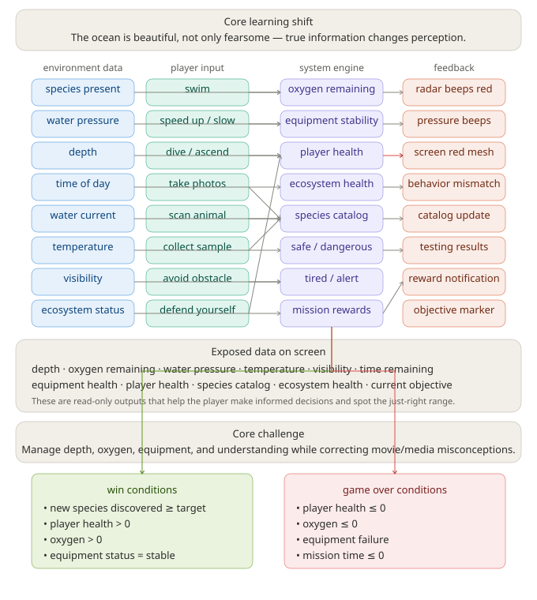

Domain knowledge & system design
Why this knowledge is real, and how the game turns it into a playable system.
The real-world domain
Scuba diving and the ocean ecosystem.
Novice misconception
Beginners think there is a fixed set of creatures and that ecosystems work the same close to and far from shore. They assume their reaction is correct because it matches movies, false news, and social media — so "shark" always means "danger."
Expert judgment
The real challenge is depth, oxygen, equipment, and understanding. A diver reads pressure, knows their gear's limit, and identifies a creature before reacting. A large animal on the radar is often a harmless filter feeder, not a threat.
The ocean is beautiful, not only fearsome. Knowing true information — not the headline version — changes how people see it. Most sharks avoid divers; the biggest fish in the sea is gentle.
Why this becomes playable
Each piece of domain knowledge maps to a mechanic.
| Domain knowledge | Game mechanic |
|---|---|
| Coral reef ecology | Coral formations are the world. Creatures hide inside them — swim close to discover them. Each species has a real reef role (cleaner, grazer, predator, filter feeder). |
| Ecosystem health | Pollution drifts through the water and damages coral. Swim through it to clean it. Coral bleaches white when sick; the water turns murky when eco-health drops. Eco-health is a win condition, not just decoration. |
| Depth & pressure | Diving deeper raises pressure; past the equipment limit, gear destabilises and the screen edges flash red. |
| Oxygen management | Oxygen drains over time, faster when deep or sprinting. Return to the surface to refill. |
| Species identification | Scanning a creature adds its true fact and reef role to your catalog — including the misconception it corrects. |
| Large ≠ dangerous | The radar beeps red for size, not threat. The whale shark is huge but harmless; panicking startles it and loses a reward. |
| Predator balance | Too many predators near the reef lower eco-health. Warding them off or giving them space restores balance — killing is a last resort. |
System graph
How environment data, player input, the system engine, and feedback connect.

System data, states, and actions
| Layer | Contents |
|---|---|
| Environment data | coral formations (type, position, health), pollution particles, species present, depth, water pressure, time of day, water current, temperature, visibility, ecosystem status. |
| Player-controlled | swim, speed up / slow, dive / ascend, scan & discover creatures, clean pollution (swim through it), defend yourself. |
| System-calculated | oxygen remaining, equipment stability, player health, eco-health (reef ecosystem), coral health, species catalog, safe / dangerous, tired / alert, mission rewards, pollution cleaned. |
| Feedback signals | coral glow (hidden creature nearby), coral bleaching (eco-health low), water murk (ecosystem sick), radar beeps red (large creature near), pressure beep + edge mesh (too deep), red screen flash (attacked), catalog toast (new species + reef role). |
| Success | Discover the target number of species AND keep eco-health above the challenge threshold. |
| Failure | Out of oxygen, equipment failure under pressure, killed by a predator, or reef ecosystem collapses (eco-health near 0). |
Challenge presets
Presets change system variables and relationships — not just visuals.
1 · Reef Welcome (Tutorial)
Shallow, sunny reef. Equipment limit 25 m, low oxygen drain, target 4 species, eco-health target 60%. Mostly harmless reef life. Teaches swimming, scanning creatures in coral, and cleaning pollution.
2 · Stressed Reef (Eco-Health)
Pollution is spreading and coral is bleaching. Equipment limit 30 m, target 5 species, eco-health target 65%. Clean debris to restore the reef while discovering stressed creatures.
3 · Predator Balance (Ecosystem)
Too many predators threaten the reef. Equipment limit 35 m, target 5 species, eco-health target 55%. The whale shark triggers the radar — but scanning (not panicking) is rewarded. Balance predators while discovering species.